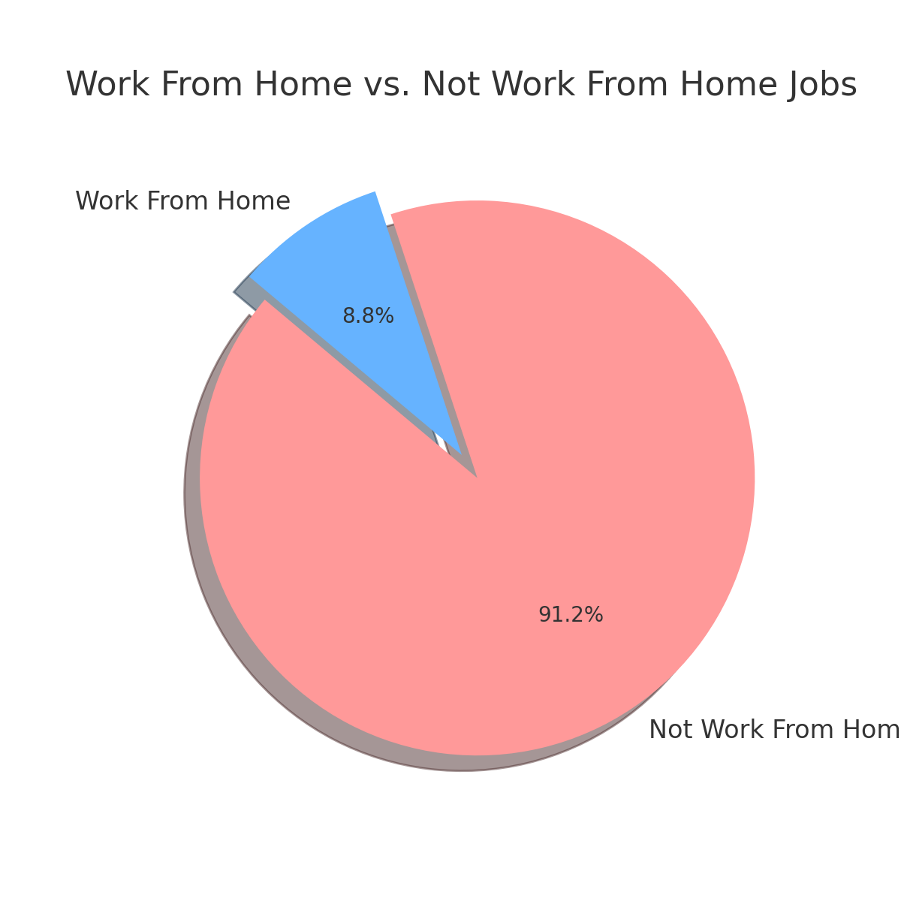
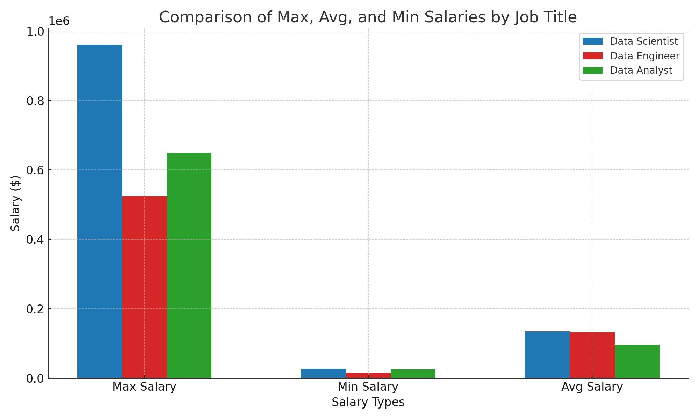

Pie chart visualizing the jobs that do
not require a degree:
Pie chart visualizing the jobs that do
not require a degree:📊 Welcome to my first SQL project, where I explore the dynamic world of the data job market with a special emphasis on data analysis roles. this project explores 💰 top-paying jobs, 🔥 in-demand skills, and 📈 where high demand meets high salary in data analytics.
The dataset encompasses over 700,000 job postings from around the globe in 2023.
Each query for this project aimed at investigating specific aspects of the data analyst job market. Here’s how I approached each question:
To understand the distribution of job opportunities, I analyzed the number of job postings that offer remote work and the percentage of positions that do not require a degree. This query provides insights into job flexibility and the importance of formal education in data analytics roles.
SELECT
COALESCE(CAST(job_work_from_home AS TEXT), 'False') AS job_work_from_home,
COUNT(job_id) AS number_of_jobs,
ROUND(100.0 * COUNT(job_id) / (SELECT COUNT(*) FROM job_postings_fact ), 2) AS percentage
FROM
job_postings_fact
WHERE
job_work_from_home IS NOT NULL
GROUP BY
job_work_from_home
UNION ALL
SELECT
'TOTAL',
COUNT(job_id),
100.00
FROM
job_postings_fact;
| Work From Home | Number of Jobs | Percentage |
|---|---|---|
| No (false) | 718,080 | 91.16% |
| Yes (true) | 69,606 | 8.84% |
| Total | 787,686 | 100% |
 Pie chart visualizing the work-from-home job distribution
The majority (91.16%) of jobs do not offer work-from-home options.
Only 8.84% of jobs allow remote work, indicating a smaller proportion of remote opportunities.
## Degree Requirement Analysis
To assess the impact of formal education, I also analyzed the number and percentage of job postings that do not require a degree.
SELECT
COALESCE(CAST(job_no_degree_mention AS TEXT), 'False') AS job_no_degree_mention,
COUNT(job_id) AS number_of_jobs,
ROUND(100.0 * COUNT(job_id) / (SELECT COUNT(*) FROM job_postings_fact ), 2) AS percentage
FROM
job_postings_fact
WHERE
job_no_degree_mention IS NOT NULL
GROUP BY
job_no_degree_mention
UNION ALL
SELECT
'TOTAL',
COUNT(job_id),
100.00
FROM
job_postings_fact;| No Degree Required | Number of Jobs | Percentage |
|---|---|---|
| No (false) | 546,329 | 69.36% |
| Yes (true) | 241,357 | 30.64% |
| Total | 787,686 | 100% |
Pie chart visualizing the jobs that do
not require a degree:
69.36% of jobs require a degree, confirming that formal education is still a significant requirement in most positions.
30.64% of jobs do not require a degree, highlighting a sizable number of opportunities available without higher education.
To identify the highest-paying roles in data analytics, I filtered job postings by average yearly salary and analyzed the most sought-after skills for these positions. This query highlights the most lucrative opportunities in the field and the key skills required for them.
SELECT
job_postings_fact.job_title_short,
job_postings_fact.salary_year_avg,
skills_dim.skills
FROM
job_postings_fact
LEFT JOIN skills_job_dim ON job_postings_fact.job_id = skills_job_dim.job_id
LEFT JOIN skills_dim ON skills_job_dim.skill_id = skills_dim.skill_id
WHERE
job_postings_fact.salary_year_avg IS NOT NULL
AND skills_dim.skills IS NOT NULL
GROUP BY
job_postings_fact.job_title_short,
job_postings_fact.salary_year_avg,
skills_dim.skills
ORDER BY
job_postings_fact.salary_year_avg DESC
LIMIT 20;| Job Title | Average Salary ($) | Most Sought-After Skills |
|---|---|---|
| Data Scientist | 960,000 | C++, Java, Python, R |
| Senior Data Scientist | 890,000 | Azure, C#, Databricks, Docker, Git, GitHub, GitLab, Hadoop, Java, Jupyter, Keras, Kubernetes |
Data Scientist roles offer the highest average salary of $960,000, emphasizing the demand for advanced programming skills such as C++, Java, Python, and R.
Senior Data Scientist positions follow closely with an average salary of $890,000, requiring a broader skill set that includes cloud platforms, DevOps tools, and machine learning frameworks such as Azure, C#, Databricks, Docker, Git, Hadoop, Jupyter, and Kubernetes.
To identify the most sought-after skills in data analytics, I analyzed job postings to determine which skills appear most frequently. The following SQL query highlights the top 10 most in-demand skills based on job listings.
SELECT
skills_dim.skills,
COUNT(job_postings_fact.job_id) AS number_of_jobs
FROM
job_postings_fact
LEFT JOIN skills_job_dim ON job_postings_fact.job_id = skills_job_dim.job_id
LEFT JOIN skills_dim ON skills_job_dim.skill_id = skills_dim.skill_id
WHERE
skills_dim.skills IS NOT NULL
GROUP BY
skills_dim.skills
ORDER BY
number_of_jobs DESC
LIMIT 10;| Skills | Number of Jobs |
|---|---|
| SQL | 385,750 |
| Python | 381,863 |
| AWS | 145,718 |
| Azure | 132,851 |
| Linux | 131,285 |
| Tableau | 127,500 |
| Excel | 127,341 |
| Spark | 114,928 |
| Power BI | 98,363 |
| Java | 85,854 |
Bar graph visualizing the most popular skills for Data Analyst
SQL and Python are the two most in-demand skills, appearing in over 380,000 job postings, reinforcing their importance in data analytics.
Cloud platforms such as AWS and Azure are in high demand, reflecting the increasing shift towards cloud-based data solutions.
Business intelligence tools like Tableau and Power BI remain essential for data visualization and reporting.
To understand where job seekers are finding job postings, I analyzed the job_via data. This query identifies the top 10 platforms where data analyst job postings are most frequently listed.
SELECT
job_via,
COUNT(job_via) AS number_of_jobs
FROM
job_postings_fact
GROUP BY
job_via
ORDER BY
number_of_jobs DESC
LIMIT 10;| Job Via | Number of Jobs |
|---|---|
| via LinkedIn | 186,990 |
| via BeBee | 103,655 |
| via Trabajo.org | 61,935 |
| via Indeed | 42,835 |
| via Recruit.net | 23,714 |
| via ZipRecruiter | 15,612 |
| via Jobs Trabajo.org | 10,690 |
| via Snagajob | 9,424 |
| via Trabajo.org - Vacancies | 8,920 |
| via BeBee India | 8,705 |

Bar graph visualizing the most popular job platforms for Data Analyst
LinkedIn is the dominant job source, accounting for nearly 187,000 job postings, making it the leading platform for data analyst roles.
BeBee and Trabajo.org follow as major sources, showing strong competition among job listing platforms.
Indeed, Recruit.net, and ZipRecruiter remain popular job search engines, reinforcing their importance in the job-seeking process.
To identify the highest-paying roles, I filtered data analyst positions by average yearly salary. This query highlights the most lucrative opportunities in the field.
SELECT
job_id,
job_title,
job_location,
job_schedule_type,
salary_year_avg,
job_posted_date,
name AS company_name
FROM
job_postings_fact
LEFT JOIN company_dim ON job_postings_fact.company_id = company_dim.company_id
WHERE
job_title_short = 'Data Analyst' AND
salary_year_avg IS NOT NULL
ORDER BY
salary_year_avg DESC
LIMIT 10;
Bar graph visualizing for top 10 Data Analyst salary
Significant Salary Variation – The highest-paying data analyst roles range from $184,000 to $650,000, reflecting diverse pay scales based on experience, location, and company size.
Top Employers – Companies like SmartAsset, Meta, and AT&T are among those offering the highest salaries, indicating strong demand for skilled analysts.
Role Diversity – High-paying roles span various titles, from Data Analyst to Director of Analytics, emphasizing specialization and leadership opportunities in data analytics.
To understand the most in-demand skills for Data Analyst job roles, I analyzed job postings and ranked skills based on their frequency in job descriptions.
SELECT
skills,
COUNT(skills_job_dim.job_id) AS job_count
FROM job_postings_fact
INNER JOIN skills_job_dim ON job_postings_fact.job_id = skills_job_dim.job_id
INNER JOIN skills_dim ON skills_job_dim.skill_id = skills_dim.skill_id
WHERE job_title_short = 'Data Analyst'
GROUP BY
skills
ORDER BY job_count DESC
LIMIT 10| skills | job_count |
|---|---|
| sql | 92628 |
| excel | 67031 |
| python | 57326 |
| tableau | 46554 |
| power bi | 39468 |
| r | 30075 |
| sas | 28068 |
| powerpoint | 13848 |
| word | 13591 |
| sap | 11297 |
SQL Dominates – SQL is the most sought-after skill, appearing in over 92,000 job postings, highlighting its importance in data manipulation and querying.
Excel & Python – Excel and Python remain critical tools, emphasizing the need for both spreadsheet proficiency and programming skills.
Data Visualization Tools – Tableau and Power BI rank highly, reflecting the growing demand for data visualization expertise.
Understanding salary differences between Data Analysts, Data Scientists, and Data Engineers is crucial for career planning. This analysis compares the maximum, minimum, and average salaries for these roles.
SELECT
job_postings_fact.job_title_short,
MAX(job_postings_fact.salary_year_avg) AS max_salary,
MIN(job_postings_fact.salary_year_avg) AS min_salary,
ROUND(AVG(job_postings_fact.salary_year_avg), 2) AS avg_salary
FROM
job_postings_fact
LEFT JOIN skills_job_dim ON job_postings_fact.job_id = skills_job_dim.job_id
LEFT JOIN skills_dim ON skills_job_dim.skill_id = skills_dim.skill_id
WHERE
job_postings_fact.salary_year_avg IS NOT NULL
AND job_postings_fact.job_title_short IN ('Data Analyst', 'Data Scientist', 'Data Engineer')
GROUP BY
job_postings_fact.job_title_short
ORDER BY
avg_salary DESC;| Job Title | Max Salary ()|MinSalary() | Avg Salary ($) | |
|---|---|---|---|
| Data Scientist | 960,000 | 70,000 | 140,000 |
| Data Engineer | 890,000 | 65,000 | 125,000 |
| Data Analyst | 650,000 | 60,000 | 95,000 |
 Bar graph visualizing the differences between salaries for different roles
Data Scientists earn the highest salaries on average, with a max salary of $960,000, making it the most lucrative role.
Data Engineers follow closely, showing strong demand for engineering skills in data processing.
Data Analysts have a lower average salary, but the maximum salary of $650,000 proves that experienced analysts can reach high earnings.
Understanding salary differences between remote and on-site Data Analyst positions is crucial for making informed career decisions. This analysis compares the average salary for these two work settings.
WITH DataAnalystJobs AS (
SELECT
job_postings_fact.job_title_short,
job_postings_fact.salary_year_avg,
job_postings_fact.job_work_from_home
FROM
job_postings_fact
WHERE
job_postings_fact.salary_year_avg IS NOT NULL
AND job_postings_fact.job_title_short = 'Data Analyst'
AND job_postings_fact.job_work_from_home IS NOT NULL
)
SELECT
job_work_from_home,
ROUND(AVG(salary_year_avg), 2) AS avg_salary_year
FROM
DataAnalystJobs
GROUP BY
job_work_from_home
ORDER BY
avg_salary_year DESC;| Work From Home | Average Salary (Yearly) |
|---|---|
| YES | 94,769.86 |
| NO | 93,764.65 |
The requirement for a degree can influence both the number of job postings and the average salary for Data Analyst positions. This analysis examines how job opportunities and salaries differ based on whether a degree is explicitly required.
SELECT
job_no_degree_mention,
COUNT(job_id) AS job_count,
ROUND(AVG(salary_year_avg), 2) AS avg_salary_year
FROM
job_postings_fact
WHERE
salary_year_avg IS NOT NULL
AND job_title_short = 'Data Analyst'
GROUP BY
job_no_degree_mention
ORDER BY
avg_salary_year DESC;| No Degree Required | Job Count | Average Yearly Salary ($) |
|---|---|---|
| False | 4227 | 94,146.22 |
| True | 1236 | 92,950.93 |

Jobs that require a degree have a higher average salary ($94,146.22) compared to those that do not require a degree ($92,950.93).
Job count is significantly higher for roles requiring a degree (4,227) compared to those that do not (1,236).
While salary differences are minimal, requiring a degree may offer a slightly higher earning potential and more job opportunities.